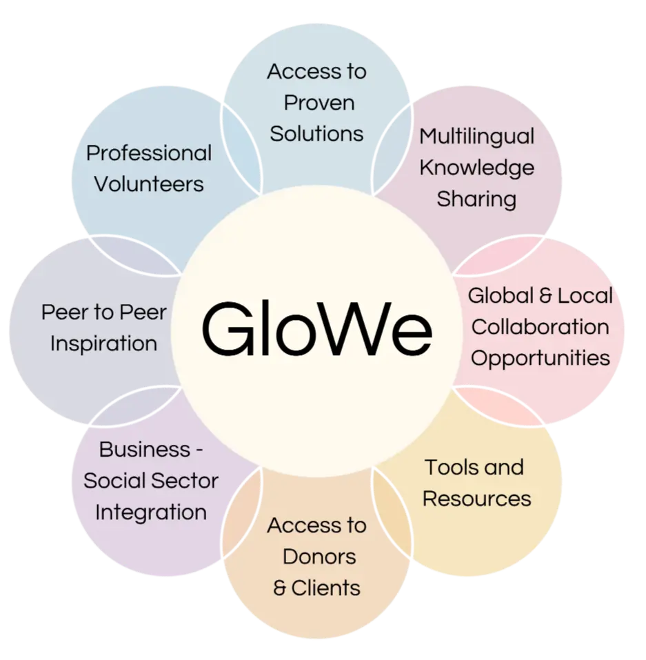
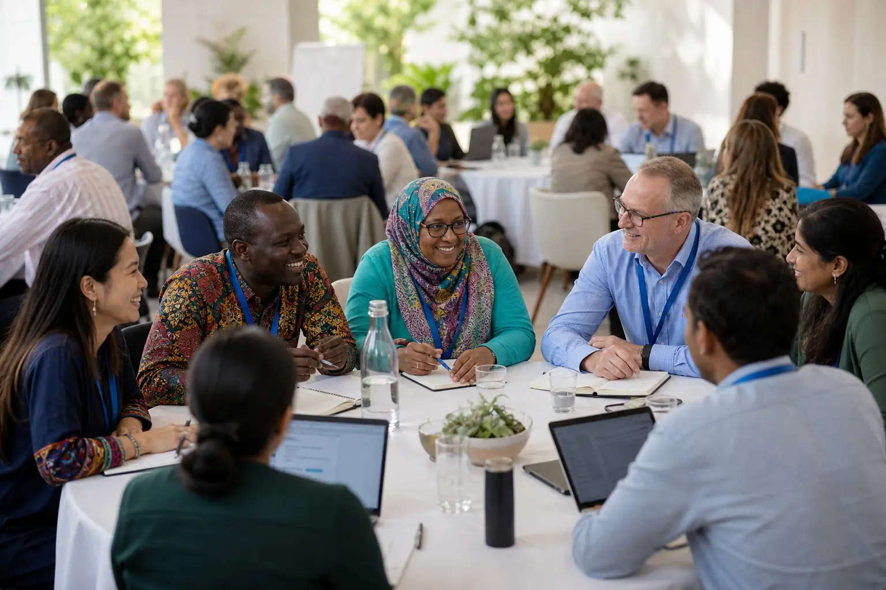

People who know the place
Local organizations, initiatives, residents, volunteers, and partners bring the real context: what is needed, what already works, who should be involved, and what kind of support would actually help.
Share a local needGloWe is a warm, professional community for people, organizations, initiatives, volunteers, and partners working around the SDGs. Here you can ask for support, offer what you know, share field wisdom, and meet people who walk beside you in the work.

Sometimes you give. Sometimes you need help. Both belong here. GloWe is built for mutual support, respectful collaboration, and the quiet relief of finding people who understand the journey.
GloWe was created as a home for impact communities: a place to make work visible, build trust, share multilingual knowledge, and turn local needs into collaborative action. You can arrive with a project, a question, a skill, a story, or a need. There is room for all of it.
Local organizations, initiatives, residents, volunteers, and partners bring the real context: what is needed, what already works, who should be involved, and what kind of support would actually help.
Share a local needProfessionals, mentors, facilitators, service providers, and experienced practitioners can offer advice, services, office hours, forum leadership, tools, and practical guidance.
Offer your expertiseAcross countries, languages, and fields, members can learn from each other, translate field wisdom, adapt proven solutions, and connect local action to global SDG challenges.
Join a discussionPost a clear need in the Wishing Well: volunteers, partners, knowledge, visibility, tools, space, or practical advice.
Join the Volunteer Network and find places where your skills, experience, language, or care can make someone else's work lighter.
Offer HelpRead posts, ask questions, respond with care, and meet others who are also building social and environmental change.
Enter CommunityPresent your mission, projects, fields of action, SDGs, needs, and the kind of collaborations you are open to.
Write posts, ask questions, share field knowledge, publish updates, and join topic-based discussions.
Turn a real need into a clear call for support: volunteers, partners, knowledge, visibility, space, tools, or funding support.
Browse opportunities, save what matters, contact members, and offer your professional skills, time, resources, or lived experience.
We believe impact grows when people stand with each other, listen deeply, and act with care.
Field wisdom, professional tools, lived experience, and multilingual learning all have value here.
Good intentions become stronger when they are connected to clear needs, real people, and concrete next steps.
Profiles, posts, messages, and collaborations should support dignity, transparency, and responsible community care.
Our community is built around practical exchange: professional volunteers, proven solutions, multilingual knowledge, local and global collaboration, tools and resources, donor and client access, social-business integration, and peer-to-peer inspiration.
Each part of the system is here to help impact work become more visible, connected, and supported.

Explore possible connections between needs, skills, organizations, and people. Each suggestion is an invitation to read, ask, and decide together.
Use example grant cards and a funding-brief flow to turn a real need into a clearer request, budget story, and next step.
See How This Could GrowRecognition in GloWe is about visible contribution, not empty ranking. Signals stay tied to documented activity, trust, and community review.
Read What's NextStart with one useful post, one profile, one wish, or one opportunity.
A digital-human space for shared knowledge, practical connection, and gradual community growth.
Bring what you know. Ask for what you need. Meet people who are working, learning, building, and caring around the SDGs.